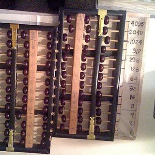
Abacus
Jaynegeorge
Resized and cropped to a square; converted to WebP. Derivative retains the source license.Historical artifacts, landmarks and everyday objects from Wikimedia Commons. Each square crop retains its original license.

Jaynegeorge
Resized and cropped to a square; converted to WebP. Derivative retains the source license.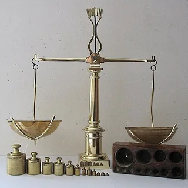
Photographie personnelle User:Poussin jean
Resized and cropped to a square; converted to WebP. Derivative retains the source license.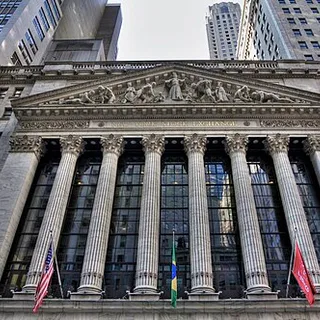
TomasEE
Resized and cropped to a square; converted to WebP. Derivative retains the source license.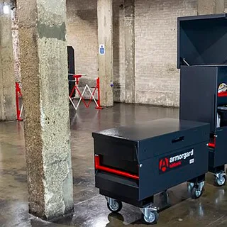
5Diraptor
Resized and cropped to a square; converted to WebP. Derivative retains the source license.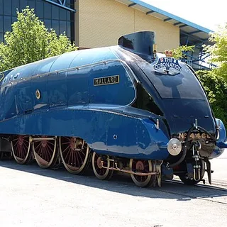
PTG Dudva
Resized and cropped to a square; converted to WebP. Derivative retains the source license.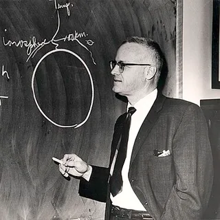
Unknown authorUnknown author
Resized and cropped to a square; converted to WebP. Derivative retains the source license.Mc681
Resized and cropped to a square; converted to WebP. Derivative retains the source license.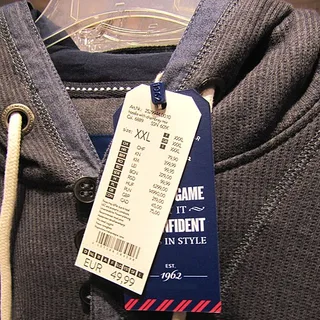
GeoTrinity
Resized and cropped to a square; converted to WebP. Derivative retains the source license.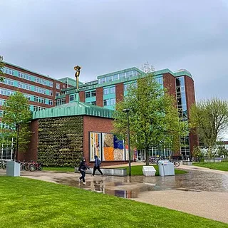
Photograph by Mike Peel (www.mikepeel.net).
Resized and cropped to a square; converted to WebP. Derivative retains the source license.Rufino
Resized and cropped to a square; converted to WebP. Derivative retains the source license.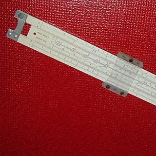
ArnoldReinhold
Resized and cropped to a square; converted to WebP. Derivative retains the source license.Diacritica
Resized and cropped to a square; converted to WebP. Derivative retains the source license.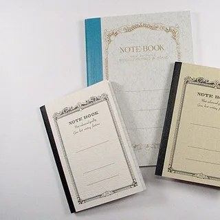
L.Marie
Resized and cropped to a square; converted to WebP. Derivative retains the source license.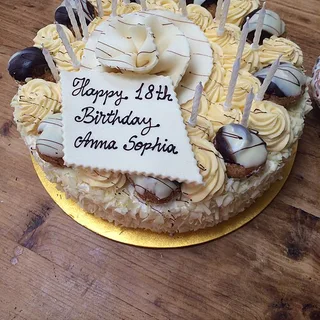
Jonathan Rolande from Worthing, England
Resized and cropped to a square; converted to WebP. Derivative retains the source license.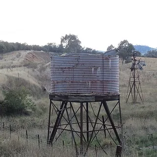
John Hewat from Canberra, Australia
Resized and cropped to a square; converted to WebP. Derivative retains the source license.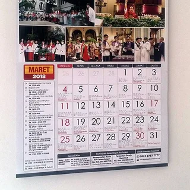
Rantemario
Resized and cropped to a square; converted to WebP. Derivative retains the source license.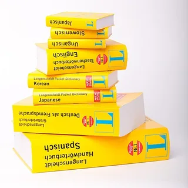
Langenscheidt
Resized and cropped to a square; converted to WebP. Derivative retains the source license.Joe Crawford from Moorpark, California, USA
Resized and cropped to a square; converted to WebP. Derivative retains the source license.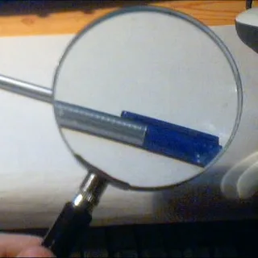
WolfenSilva
Resized and cropped to a square; converted to WebP. Derivative retains the source license.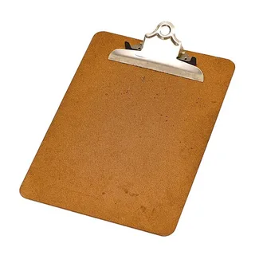
Evan-amos
Resized and cropped to a square; converted to WebP. Derivative retains the source license.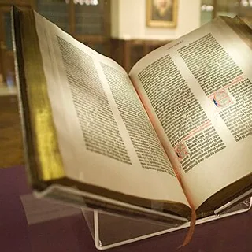
NYC Wanderer (Kevin Eng)
Resized and cropped to a square; converted to WebP. Derivative retains the source license.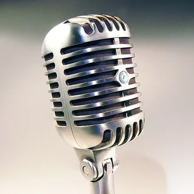
Holger.Ellgaard
Resized and cropped to a square; converted to WebP. Derivative retains the source license.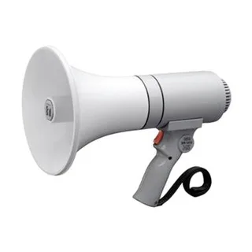
SBudiMasdar
Resized and cropped to a square; converted to WebP. Derivative retains the source license.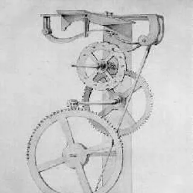
Vincenzo Viviani
Resized and cropped to a square; converted to WebP. Derivative retains the source license.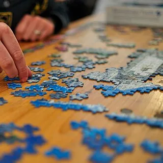
Scouten
Resized and cropped to a square; converted to WebP. Derivative retains the source license.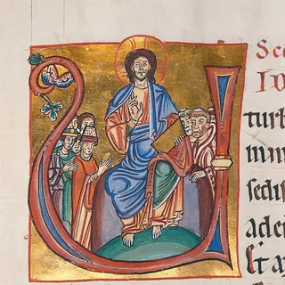
http://www.blb-karlsruhe.de/
Resized and cropped to a square; converted to WebP. Derivative retains the source license.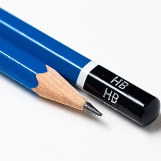
Original uploader was Dmgerman at en.wikipedia
Resized and cropped to a square; converted to WebP. Derivative retains the source license.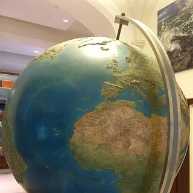
David Keddie
Resized and cropped to a square; converted to WebP. Derivative retains the source license.Charles Ransom Miller
Resized and cropped to a square; converted to WebP. Derivative retains the source license.Toni Lozano
Resized and cropped to a square; converted to WebP. Derivative retains the source license.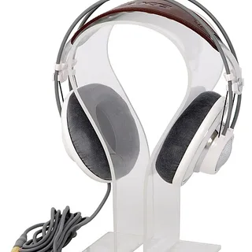
http://muzyczny.pl
Resized and cropped to a square; converted to WebP. Derivative retains the source license.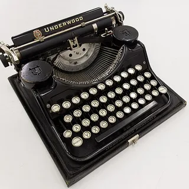
GodeNehler
Resized and cropped to a square; converted to WebP. Derivative retains the source license.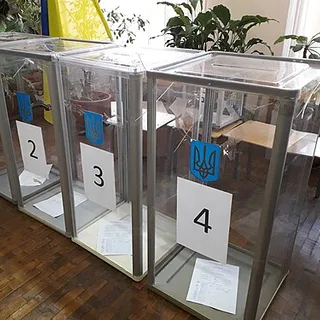
Tohaomg
Resized and cropped to a square; converted to WebP. Derivative retains the source license.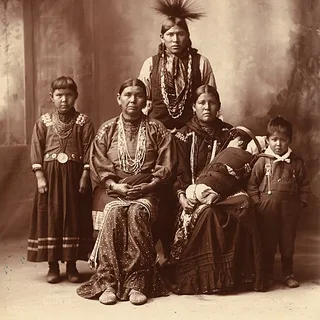
Frank Rinehart
Resized and cropped to a square; converted to WebP. Derivative retains the source license.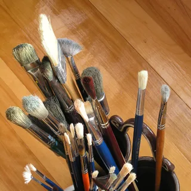
Krestavilis at English Wikipedia
Resized and cropped to a square; converted to WebP. Derivative retains the source license.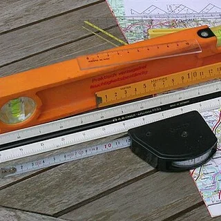
Geof
Resized and cropped to a square; converted to WebP. Derivative retains the source license.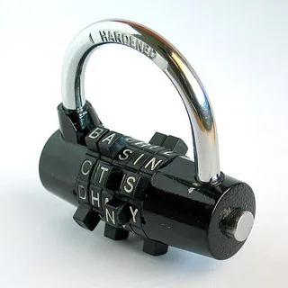
User:Mysid
Resized and cropped to a square; converted to WebP. Derivative retains the source license.Alan Light
Resized and cropped to a square; converted to WebP. Derivative retains the source license.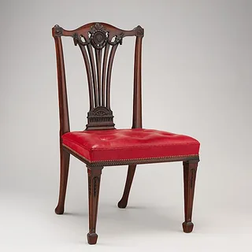
Thomas Chippendale
Resized and cropped to a square; converted to WebP. Derivative retains the source license.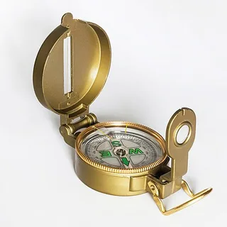
Jacek Halicki
Resized and cropped to a square; converted to WebP. Derivative retains the source license.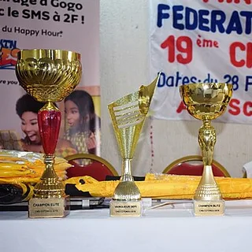
Homo Anchorus
Resized and cropped to a square; converted to WebP. Derivative retains the source license.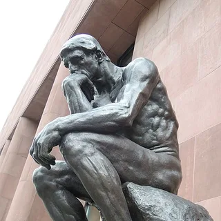
Kaisching
Resized and cropped to a square; converted to WebP. Derivative retains the source license.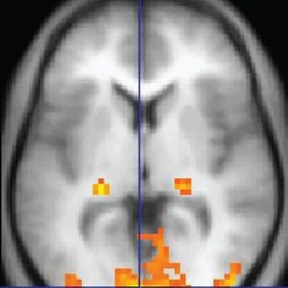
OpenStax
Resized and cropped to a square; converted to WebP. Derivative retains the source license.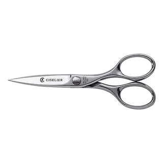
Doggerelblogger
Resized and cropped to a square; converted to WebP. Derivative retains the source license.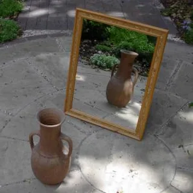
Cgs
Resized and cropped to a square; converted to WebP. Derivative retains the source license.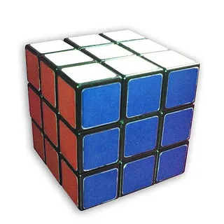
Mike Gonzalez (TheCoffee)
Resized and cropped to a square; converted to WebP. Derivative retains the source license.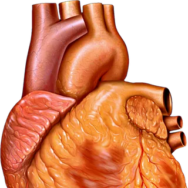
Jerm
Resized and cropped to a square; converted to WebP. Derivative retains the source license.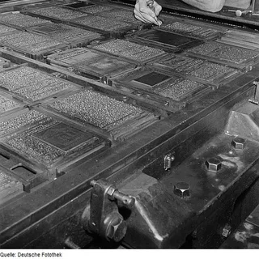
Roger Rössing / Renate Rössing
Resized and cropped to a square; converted to WebP. Derivative retains the source license.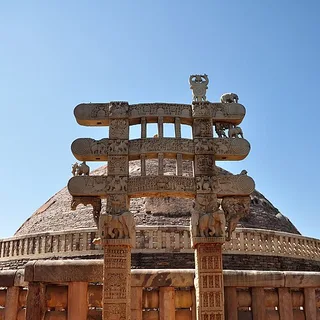
Biswarup Ganguly
Resized and cropped to a square; converted to WebP. Derivative retains the source license.PerSona77
Resized and cropped to a square; converted to WebP. Derivative retains the source license.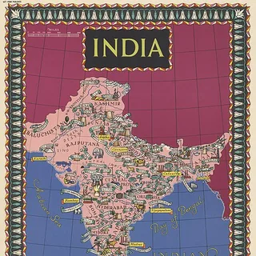
British Information Services, an agency of the British Government, restoration by Wilfredor
Resized and cropped to a square; converted to WebP. Derivative retains the source license.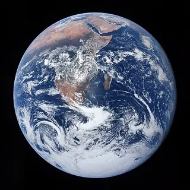
Harrison Schmitt / Apollo 17
Resized and cropped to a square; converted to WebP. Derivative retains the source license.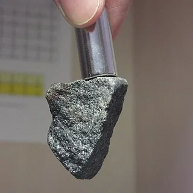
GOKLuLe 盧樂
Resized and cropped to a square; converted to WebP. Derivative retains the source license.Amitchell125 at English Wikipedia
Resized and cropped to a square; converted to WebP. Derivative retains the source license.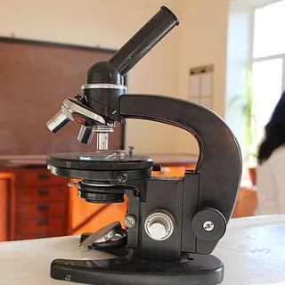
Ann 2000
Resized and cropped to a square; converted to WebP. Derivative retains the source license.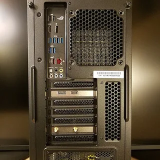
Bretwa
Resized and cropped to a square; converted to WebP. Derivative retains the source license.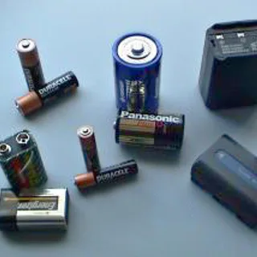
en:User:Brianiac
Resized and cropped to a square; converted to WebP. Derivative retains the source license.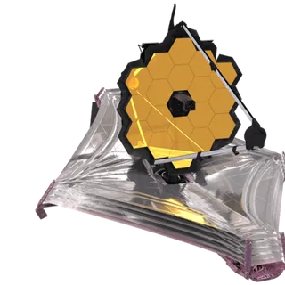
NASA
Resized and cropped to a square; converted to WebP. Derivative retains the source license.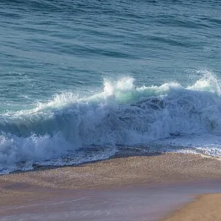
Alvesgaspar
Resized and cropped to a square; converted to WebP. Derivative retains the source license.ROTFLOLEB
Resized and cropped to a square; converted to WebP. Derivative retains the source license.Jacek Halicki
Resized and cropped to a square; converted to WebP. Derivative retains the source license.Kameraprojekt Graz 2015
Resized and cropped to a square; converted to WebP. Derivative retains the source license.Raimond Spekking
Resized and cropped to a square; converted to WebP. Derivative retains the source license.Didier Descouens
Resized and cropped to a square; converted to WebP. Derivative retains the source license.Anonimski
Resized and cropped to a square; converted to WebP. Derivative retains the source license.Hans Hillewaert
Resized and cropped to a square; converted to WebP. Derivative retains the source license.Fir0002
Resized and cropped to a square; converted to WebP. Derivative retains the source license.Diego Delso
Resized and cropped to a square; converted to WebP. Derivative retains the source license.
Matúš Motlo
Resized and cropped to a square; converted to WebP. Derivative retains the source license.PeterPan23
Resized and cropped to a square; converted to WebP. Derivative retains the source license.NASA Landsat image
Resized and cropped to a square; converted to WebP. Derivative retains the source license.kallerna
Resized and cropped to a square; converted to WebP. Derivative retains the source license.Tisha Mukherjee
Resized and cropped to a square; converted to WebP. Derivative retains the source license.w:user:PlaneMad
Resized and cropped to a square; converted to WebP. Derivative retains the source license.Rdevany
Resized and cropped to a square; converted to WebP. Derivative retains the source license.PiccoloNamek
Resized and cropped to a square; converted to WebP. Derivative retains the source license.lubasi
Resized and cropped to a square; converted to WebP. Derivative retains the source license.AndreasPraefcke
Resized and cropped to a square; converted to WebP. Derivative retains the source license.Smerdis of Tlön
Resized and cropped to a square; converted to WebP. Derivative retains the source license.Maureen from Buffalo, USA
Resized and cropped to a square; converted to WebP. Derivative retains the source license.NASA/Expedition 40 crew member
Resized and cropped to a square; converted to WebP. Derivative retains the source license.kallerna
Resized and cropped to a square; converted to WebP. Derivative retains the source license.Cyrus Read Geophysicist USGS, Alaska Volcano Observatory cread@usgs.gov
Resized and cropped to a square; converted to WebP. Derivative retains the source license.Krzysztof P. Jasiutowicz
Resized and cropped to a square; converted to WebP. Derivative retains the source license.Vandelizer
Resized and cropped to a square; converted to WebP. Derivative retains the source license.Firebrace
Resized and cropped to a square; converted to WebP. Derivative retains the source license.Michael Sander
Resized and cropped to a square; converted to WebP. Derivative retains the source license.Leonardo da Vinci
Resized and cropped to a square; converted to WebP. Derivative retains the source license.Mushki Brichta
Resized and cropped to a square; converted to WebP. Derivative retains the source license.AnonymousUnknown author
Resized and cropped to a square; converted to WebP. Derivative retains the source license.John Frere
Resized and cropped to a square; converted to WebP. Derivative retains the source license.Odantapuribs
Resized and cropped to a square; converted to WebP. Derivative retains the source license.Unknown authorUnknown author
Resized and cropped to a square; converted to WebP. Derivative retains the source license.KMJ, alpha masking by Edokter
Resized and cropped to a square; converted to WebP. Derivative retains the source license.John Chang
Resized and cropped to a square; converted to WebP. Derivative retains the source license.Jacob Cornelisz. van Neck (Necq)
Resized and cropped to a square; converted to WebP. Derivative retains the source license.David Richfield
Resized and cropped to a square; converted to WebP. Derivative retains the source license.this version: Sonarpulse. origenal:Huji
Resized and cropped to a square; converted to WebP. Derivative retains the source license.Francisco Welter-Schultes
Resized and cropped to a square; converted to WebP. Derivative retains the source license.w:en:User:Dev920
Resized and cropped to a square; converted to WebP. Derivative retains the source license.unknown, MET museum
Resized and cropped to a square; converted to WebP. Derivative retains the source license.Subharnab Majumdar
Resized and cropped to a square; converted to WebP. Derivative retains the source license.Matúš Motlo
Resized and cropped to a square; converted to WebP. Derivative retains the source license.Ayush Raj
Resized and cropped to a square; converted to WebP. Derivative retains the source license.Chrisi1964
Resized and cropped to a square; converted to WebP. Derivative retains the source license.unknown Indus Valley Civilization sealmaker from Mohenjodaro archaeological site
Resized and cropped to a square; converted to WebP. Derivative retains the source license.PHGCOM
Resized and cropped to a square; converted to WebP. Derivative retains the source license.Srkris at English Wikipedia
Resized and cropped to a square; converted to WebP. Derivative retains the source license.Subham9423
Resized and cropped to a square; converted to WebP. Derivative retains the source license.Photo Dharma from Penang, Malaysia
Resized and cropped to a square; converted to WebP. Derivative retains the source license.Darisi sumanth
Resized and cropped to a square; converted to WebP. Derivative retains the source license.Chainwit.
Resized and cropped to a square; converted to WebP. Derivative retains the source license.Nature lusty vikash
Resized and cropped to a square; converted to WebP. Derivative retains the source license.Wasir kasab
Resized and cropped to a square; converted to WebP. Derivative retains the source license.Shahnoor Habib Munmun
Resized and cropped to a square; converted to WebP. Derivative retains the source license.Nilamgandhre
Resized and cropped to a square; converted to WebP. Derivative retains the source license.iMahesh
Resized and cropped to a square; converted to WebP. Derivative retains the source license.Shagil Kannur
Resized and cropped to a square; converted to WebP. Derivative retains the source license.Nandanupadhyay
Resized and cropped to a square; converted to WebP. Derivative retains the source license.Elliott & Fry
Resized and cropped to a square; converted to WebP. Derivative retains the source license.Unknown (Netaji Research Bureau, Calcutta)
Resized and cropped to a square; converted to WebP. Derivative retains the source license.Illumination/ornamentation by Beohar Rammanohar Sinha, calligraphy by Prem Behari Narain Raizada.
Resized and cropped to a square; converted to WebP. Derivative retains the source license.Babasteve
Resized and cropped to a square; converted to WebP. Derivative retains the source license.Original uploader was KawalSingh at en.wikipedia
Resized and cropped to a square; converted to WebP. Derivative retains the source license.Prescott Pym on Flickr
Resized and cropped to a square; converted to WebP. Derivative retains the source license.Vivekh 1979
Resized and cropped to a square; converted to WebP. Derivative retains the source license.NASA
Resized and cropped to a square; converted to WebP. Derivative retains the source license.Kelvinsong
Resized and cropped to a square; converted to WebP. Derivative retains the source license.NASA/Tom Tschida
Resized and cropped to a square; converted to WebP. Derivative retains the source license.Soham Banerjee
Resized and cropped to a square; converted to WebP. Derivative retains the source license.National Museum of American History
Resized and cropped to a square; converted to WebP. Derivative retains the source license.Zephyris at English Wikipedia
Resized and cropped to a square; converted to WebP. Derivative retains the source license.Wikideas1
Resized and cropped to a square; converted to WebP. Derivative retains the source license.Don Ramey Logan
Resized and cropped to a square; converted to WebP. Derivative retains the source license.Surenders25
Resized and cropped to a square; converted to WebP. Derivative retains the source license.Brocken Inaglory. The image was edited by user:Alvesgaspar
Resized and cropped to a square; converted to WebP. Derivative retains the source license.The original uploader was Archit Patel at English Wikipedia.
Resized and cropped to a square; converted to WebP. Derivative retains the source license.Arthur Clarke at English Wikipedia
Resized and cropped to a square; converted to WebP. Derivative retains the source license.Zrenier
Resized and cropped to a square; converted to WebP. Derivative retains the source license.Original: Rainer Halama Derivative work: UnpetitproleX
Resized and cropped to a square; converted to WebP. Derivative retains the source license.Yann; edited by Jim Carter
Resized and cropped to a square; converted to WebP. Derivative retains the source license.Pinakpani
Resized and cropped to a square; converted to WebP. Derivative retains the source license.Abhijit Tembhekar from Mumbai, India
Resized and cropped to a square; converted to WebP. Derivative retains the source license.Nikhilb239
Resized and cropped to a square; converted to WebP. Derivative retains the source license.

.jpg){kind=link}


.jpg){kind=link}

.jpg){kind=link}


_2014-04-10.JPG){kind=link}


.jpg){kind=link}


.jpg){kind=link}


.jpg){kind=link}

_Harshat_Mata_ki_Mandir_--_img_02.jpg){kind=link}


.JPG){kind=link}

_(cropped).jpg){kind=link}


.jpg){kind=link}


.jpg){kind=link}
.jpeg){kind=link}